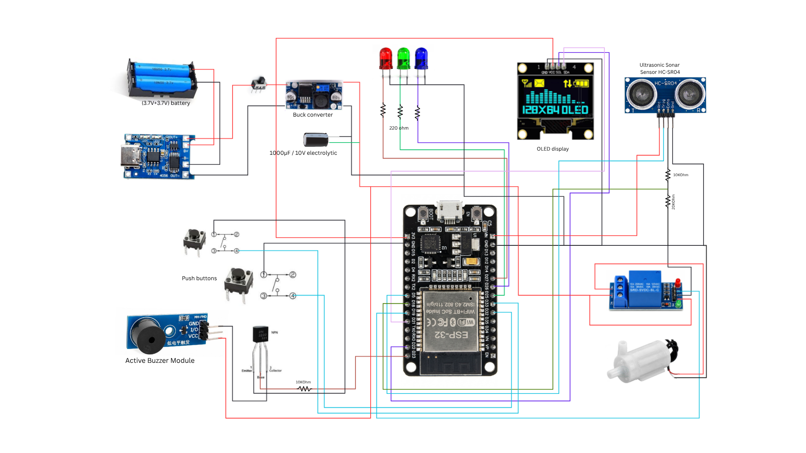

SmartFill 2.0 connection guide
Wiring and first-power-up instructions for the ESP32 water-level monitor and automatic pump controller. Keep this page open alongside the project README.
Important diagram note: connection.png is the supplied component/layout illustration. Its visible GPIO routes do not consistently match the current firmware. Use the pin assignments in this page and water_meter/water_meter.ino. The supplied picture also illustrates a battery, charger, and buck converter that are not configured by the firmware; power design must be selected for the actual ESP32 board, sensor, relay, and pump.

Current firmware pin map
| Part / signal | ESP32 connection | Connection details |
|---|---|---|
| HC-SR04 VCC | Regulated 5 V | Use a suitable 5 V supply. Do not assume the ESP32 3V3 pin can power the sensor. |
| HC-SR04 GND | Common GND | Ground must be common with the ESP32 for the signal reference. |
| HC-SR04 TRIG | GPIO 5 | ESP32 GPIO output to the sensor TRIG input. |
| HC-SR04 ECHO | GPIO 18 through divider | Never feed a 5 V ECHO signal directly into an ESP32 GPIO. |
| SSD1306 OLED SDA | GPIO 21 | I²C data; firmware uses address 0x3C. |
| SSD1306 OLED SCL | GPIO 22 | I²C clock. Connect module power and ground according to its specification. |
| Green LED | GPIO 15 | GPIO → individual 220–330 Ω resistor → LED anode; cathode → GND. |
| Blue LED | GPIO 16 | Same series-resistor arrangement as the green LED. |
| Red LED | GPIO 17 | Same series-resistor arrangement as the green LED. |
| Active buzzer driver | GPIO 23 to NPN base through 10 kΩ | Use an NPN transistor stage: emitter to GND, collector to buzzer negative, buzzer positive to its rated supply. Share ground. Add a flyback diode if the buzzer is inductive. Firmware sets GPIO HIGH for ON. |
| OK button | GPIO 32 to GND | Momentary normally-open button. Internal pull-up is enabled; no external pull-up is needed. |
| RESET button | GPIO 33 to GND | Momentary normally-open button. Short press cancels manual ON; hold for 2.5 s to clear calibration. |
| Relay module IN | GPIO 19 | Current firmware has RELAY_ACTIVE_LOW = false (HIGH means relay/pump request ON). Verify the module’s input compatibility and actual behavior with the pump disconnected. |
HC-SR04 ECHO voltage divider
For a typical 5 V HC-SR04, place a divider between ECHO and GPIO 18. One common arrangement uses 10 kΩ from ECHO to the GPIO node and 20 kΩ from the GPIO node to GND. This reduces a nominal 5 V echo to about 3.3 V.
HC-SR04 ECHO → 10 kΩ → GPIO 18 node → 20 kΩ → GND
Connect the GPIO 18 node to the ESP32 ECHO input. Confirm resistor values and sensor output voltage for the exact parts you have.
Power and pump wiring
- Power the ESP32 board through its supported USB or regulated input. Provide regulated power for the sensor, display, buzzer, and relay module according to each module’s voltage requirements.
- Do not power the pump from the ESP32 or a GPIO. Use a separate supply rated for the pump voltage and startup current.
- Route pump current through relay COM and NO contacts for a normally-off load. Connect the pump supply and pump only on the correctly rated relay contact circuit. Observe DC polarity or AC wiring requirements as applicable.
- Check relay contact ratings against the pump’s motor load, including inrush current. Add appropriate fuse protection and use an enclosure, insulation, and strain relief.
- Share low-voltage ground between ESP32, sensor, and driver/module circuits where required. Follow the relay module’s isolation design; never bridge isolated grounds casually.
- Keep mains wiring physically separated from low-voltage electronics. Mains-side installation should be handled by a qualified person.
Relay logic check: The current source sets RELAY_ACTIVE_LOW = false, while many relay boards are active-low. Board behavior varies. With the pump disconnected, power the ESP32 and verify the relay is de-energized at boot and responds in the intended direction. Change the firmware constant only after confirming the module’s logic.
Mounting and tank calibration
- Mount the HC-SR04 level and securely above the maximum safe water line, pointing down at the water. Avoid a position where the beam hits a wall, brace, pipe, or turbulent inlet.
- Keep the water surface farther from the sensor than the HC-SR04 blind zone. The sketch’s
SENSOR_TO_RIM_OFFSET_CMis 6 cm; update it if the installed sensor-to-safe-fill distance differs. - With the tank empty and the sensor in its final position, power the controller. Press OK to begin calibration, then press OK a second time when prompted to save the measured empty distance. The value is stored and persists across reboot.
- Recalibrate if the sensor position or tank geometry changes. Check displayed level against a known fill amount before enabling pump control.
Before connecting the pump
- Inspect for shorts and confirm common ground and supply polarity.
- Flash the firmware and open Serial Monitor at 115200 baud. Confirm the OLED, sensor readings, calibration, and Wi-Fi state.
- Keep the pump disconnected. Verify relay OFF at boot and test the relay state using its indicator or a multimeter.
- Confirm local AUTO behavior: it requests pump ON at or below 10% and OFF at 50%. Local invalid-sensor, missing-calibration, 50% level, and 15-minute runtime safeguards stop the pump.
- Only connect the pump after relay polarity, contact wiring, supply rating, fuse, and enclosure have been checked.
Firmware behavior that affects connections
- The relay output is GPIO 19, and the pump is forced OFF during boot.
- The three LEDs are GPIO 15, 16, and 17; they require separate current-limiting resistors.
- The buttons are active-low inputs on GPIO 32 and 33 because the firmware enables
INPUT_PULLUP. - The buzzer output is GPIO 23; the project sketch expects a transistor driver, not a high-current buzzer connected directly to the GPIO.
- The sensor is sampled every second. Server readings are uploaded on the configured interval (30 seconds by default), and remote commands are polled every 5 seconds while connected.